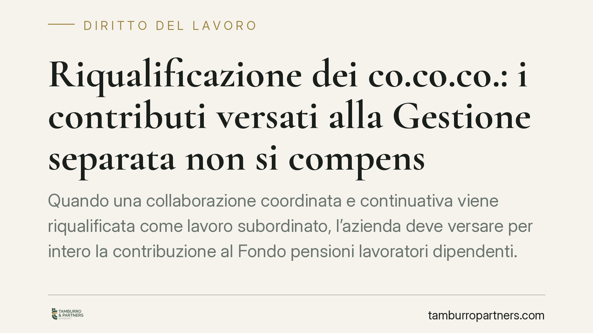

Riqualificazione dei co.co.co.: i contributi versati alla Gestione separata non si compensano
Quando una collaborazione coordinata e continuativa viene riqualificata come lavoro subordinato, l'azienda deve versare per intero la contribuzione al Fondo pensioni lavoratori dipendenti. I contributi già versati alla Gestione separata INPS non si compensano in automatico: vanno recuperati con un'azione autonoma di ripetizione dell'indebito. Un meccanismo che genera un doppio esborso temporaneo e impatta sulla liquidità aziendale.

Il caso
La questione nasce dalla riqualificazione di rapporti di collaborazione coordinata e continuativa in rapporti di lavoro subordinato, nel contesto di un contenzioso tra INPS e una società operante nel settore dei call center outbound. La Corte d'appello di Genova si era pronunciata sul punto, aprendo poi la strada al giudizio di legittimità.
Il nodo è contributivo, non solo qualificatorio. Una volta accertata la natura subordinata del rapporto, l'azienda è tenuta a versare la contribuzione prevista per il lavoro dipendente al Fondo pensioni lavoratori dipendenti (FPLD). Il problema: i contributi già versati per gli stessi collaboratori alla Gestione separata INPS possono essere scalati da quanto dovuto, oppure no?
Inquadramento normativo
La subordinazione resta ancorata all'art. 2094 c.c., che definisce il lavoratore subordinato come chi si obbliga a collaborare prestando il proprio lavoro alle dipendenze e sotto la direzione dell'imprenditore. È questa la norma cardine su cui si fonda l'accertamento.
Accanto ad essa rileva l'art. 2, comma 1, del D.lgs. 81/2015, che dal 25 giugno 2015 estende la disciplina del lavoro subordinato alle collaborazioni etero-organizzate dal committente. La stessa riforma ha abrogato il contratto a progetto (ex art. 61 e ss. del D.lgs. 276/2003) per i rapporti instaurati dopo quella data: va dunque sempre verificata la collocazione temporale del rapporto per individuare la disciplina applicabile.
Sul piano contributivo, la Gestione separata è regolata dall'art. 2, comma 26, della L. 335/1995. Le sanzioni civili per omissione e ritardo nei versamenti trovano fondamento nell'art. 116, comma 8, della L. 388/2000.
Secondo l'orientamento richiamato, il versamento effettuato alla Gestione separata a seguito della riqualificazione assume natura di indebito oggettivo: l'azienda ha pagato a una gestione che, retroattivamente, non era quella competente. La conseguenza pratica è che non opera una compensazione automatica tra le due partite contributive.
Implicazioni pratiche
Il principio ha un impatto economico rilevante. L'azienda che subisce la riqualificazione deve:
- versare per intero la contribuzione dovuta al FPLD per i periodi oggetto di accertamento;
- recuperare separatamente quanto già versato alla Gestione separata, attraverso un'autonoma azione di ripetizione dell'indebito.
Si determina così un doppio esborso temporaneo: il pagamento al FPLD è immediato ed esigibile, mentre il recupero di quanto versato alla Gestione separata richiede tempi e procedure proprie. Per imprese con un numero elevato di collaboratori riqualificati, l'effetto sulla liquidità può essere significativo.
A ciò si aggiunge, secondo l'orientamento richiamato, la possibile reviviscenza delle sanzioni civili ex art. 116, comma 8, L. 388/2000: poiché la contribuzione al FPLD risulta non versata nei termini, l'omissione può riattivare il regime sanzionatorio, con un aggravio ulteriore rispetto al solo capitale contributivo.
La distinzione sui termini
È essenziale tenere distinti due profili temporali:
- la prescrizione del credito contributivo vantato dall'INPS verso l'azienda, con il termine proprio dell'obbligazione previdenziale;
- la prescrizione dell'azione di ripetizione dell'indebito versato alla Gestione separata, che segue regole proprie e decorre secondo i criteri dell'indebito oggettivo.
I due termini non coincidono e non si rincorrono: trascurare il secondo, mentre si fronteggia il primo, espone al rischio concreto di non poter più recuperare somme già versate. È opportuno mappare entrambe le scadenze fin dall'avvio della contestazione.
Cosa fare in concreto
- Censire i rapporti a rischio. Individuare le collaborazioni che, per modalità di esecuzione, presentano indici di subordinazione o di etero-organizzazione ex art. 2 D.lgs. 81/2015.
- Quantificare il doppio esborso. Stimare in anticipo l'importo dovuto al FPLD e quello già versato alla Gestione separata, per valutare l'impatto sulla liquidità.
- Monitorare i termini. Tracciare separatamente la prescrizione del debito contributivo e quella dell'azione di ripetizione dell'indebito.
- Documentare i versamenti. Conservare in modo ordinato le prove dei pagamenti alla Gestione separata, indispensabili per l'azione di recupero.
- Valutare la posizione sanzionatoria. Verificare l'esposizione alle sanzioni civili e le eventuali possibilità di regolarizzazione.
Avvertenza
Il riferimento alla pronuncia citata va verificato nel numero e nell'anno prima di qualsiasi utilizzo processuale: le affermazioni su natura dell'indebito e reviviscenza delle sanzioni sono presentate come orientamento e vanno riscontrate sul testo integrale della decisione e sulla giurisprudenza richiamata.
Contributo informativo a cura di Tamburro & Partners – Avv. Giuseppe Tamburro. Non costituisce parere legale.
Ogni storia di lavoro ha i suoi tempi.
Se gestisci HR e vuoi un confronto su contenzioso, ispezioni o licenziamenti, scrivi allo studio. Ti rispondiamo entro un giorno lavorativo.